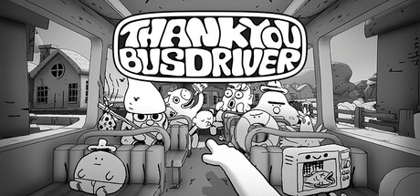
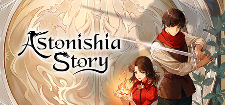
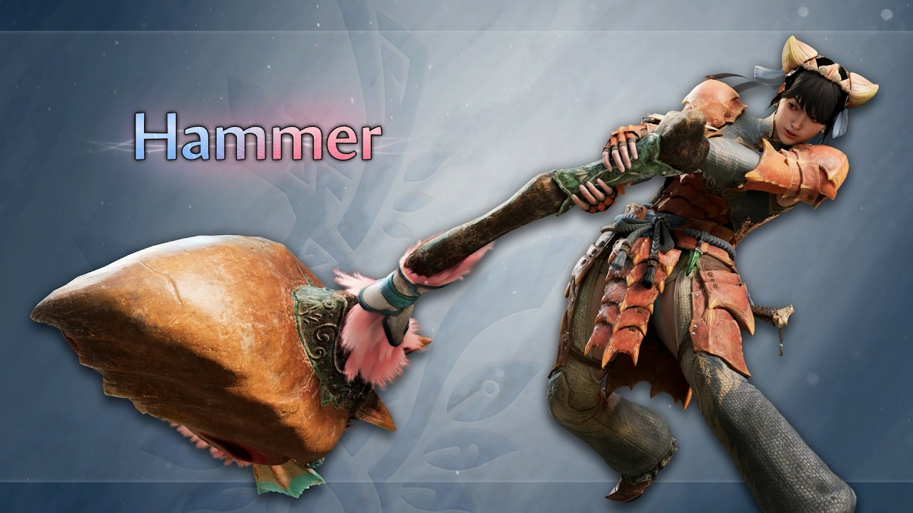

🔥🔥
Thank You Bus Driver 正式公布
Double Fine 新作：每日换规则的混沌巴士，PC 多店上架，档期未锁。
- 日期
- 2026-09-04（CST≈9/5 01:50 · 昨窗漏扫补）
- 主体
- Double Fine · Steam 5067360
- 库
- 行业 · 新作公布
今日主线是行业侧补核：Double Fine 公布 Thank You Bus Driver，以及卡普空《怪物猎人：荒野》大型扩展 Ascendance 的大锤增威动作片；另有 Astonishia Story 欧美定档 2027-02-11。今日无新旗舰；今日无新 MCP/Skill 推荐。
判定：轻量行业补核日。不复述鬼武者发售、Astra/Gemini/Fable 规格、AWS MCP、SoP 片单、夜勤人2。AI 空库写清无旗舰无推荐。
Double Fine 新作：每日换规则的混沌巴士，PC 多店上架，档期未锁。
卡普空扩展 2027 档跟进；大锤空中突击 / 爆发位移 / 重砸。
NIS America：2027-02-11 登陆 PS5 / Switch 2 / Switch / PC。
新作公布 1 + 资料片跟进 1 + 定档 1；无新展会片单；今日无独立游戏观察新增。
AI / 二次元 / 游戏开发空库未出 Tab。
行业主轴是 Double Fine 新作公布 + 卡普空 Ascendance 锤片补核 + Astonishia 欧美定档。今日无独立游戏观察新增。展会片单无新世界首发 / 无新锁（不预写 Direct）。
判定：补核日，无发售翻牌。
Double Fine 宣布混沌巴士驾驶新作：你在小镇开公交，规则天天变，靠拍飞违规乘客和收集 Thank You 续命赶点。

来源：doublefine.com · Gematsu · Steam
NIS America 公布韩国 RPG 重制《Astonishia Story》将于 2027 年 2 月 11 日在欧美登陆 PS5、Switch 2、Switch 与 PC。

卡普空为 2027 大型扩展 Ascendance 放出「Boosted Action Breakdown：Hammer」，展示大锤在增威状态下的空中突击、爆发位移与更重砸击。

来源：Gematsu · YouTube EN · 官方扩展站
今日无独立游戏观察新增。Double Fine 新作记入新游公布轴，不并入本轴。